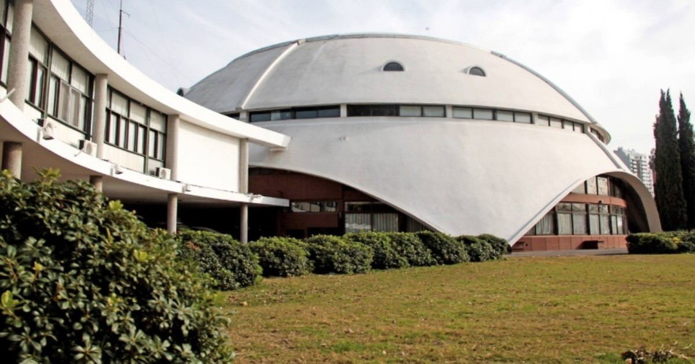

Te contamos sobre las visitas guiadas que incluye nuestro servicios para que sigas conociendo nuestra ciudad
La visita guiada del Club Atlético Newell's Old Boys tiene una hora de duración y está disponible para todo aquel visitante que esté dispuesto a conocer y a recorrer los detalles y los espacios de la Institución que vio nacer a Lionel Messi, inclusive los vestuarios de la primera división y el cesped que piso Diego Maradona.
Bellas Artes invita al público a recorrer todas sus salas de exposición permanente en la planta baja y el primer piso. Fue una donación a la municipalidad de Rosario de la Sra. Rosa Tiscornia de Castagnino en memoria de su último hijo, Juan Bautista Castagnino, importante pintor, crítico de arte y coleccionista rosarino.
Ubicado en la zona sur de la ciudad de Rosario, el museo del deporte santafesino propone una emotiva experiencia a través de la gloriosa historia deportiva de nuestra provincia. Sus características lo posicionan como uno de los museos más modernos e impactantes del mundo, ya que desarrolla sus contenidos temáticos mediante el uso de las más diversas e innovadoras técnicas de exhibición que llenarán de información al visitante y lo cautivará con apasionantes relatos.
Nos ofrece un “Mirador de las estrellas”, compuesto por estructuras gigantes que son réplicas de instrumentos astronómicos pre telescópicos utilizados a lo largo de la historia por diversas culturas para contemplar los cielos a ojo desnudo. Emplazado en el Parque Urquiza, en inmediaciones al Complejo Astronómico Municipal, fue inaugurado en el año 2012, y finales del 2021 se llevó a cabo una restauración de los dispositivos y mástiles para retomar con las visitas guiadas.
Esta visita nos brinde la posibilidad de subir hasta la Torre Central para observar desde el mirardor, el parque nacional a la bandera, el rio Parana, altar donde se rinde homenaje a los caidos por la patria y ademas el Patio Cívico, para finalizar enla Galería de Honor de las Banderas de América.
Finalizamos los recorridos de visitas guiadas en el Gigante de Arroyito, la visita consta de una recorrida por el predio, ingreso al vestuario y al campo de juego. Estadio sede del mundial 1978 testigo de la victoria de la seleccion Argentina 6 a 0 ante Peru. La duración de la misma es de aproximadamente 30 minutos.